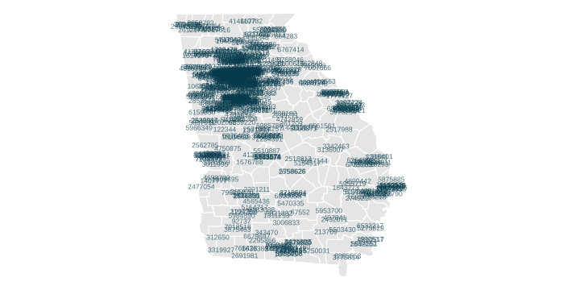

Point and Interval Estimates
Review: Connecting Sample and Population
- For each call \(i\), we randomly select a voter with an id we’ll call \(J_i\).
- And we record as that call’s outcome the turnout of that voter: \(Y_i=y_{J_i}\).
- On each call, each registered voter has a \(1/7.23M\) chance of being called.
- This is called sampling with replacement because we could call the same person twice.
- In our poll, this is unlikely because we’re making a small number of calls relative to population size.



\[ \begin{array}{r|rr|rr|r|rr|r} \text{call} & 1 & & 2 & & \dots & 625 & & \\ \text{variable} & J_1 & Y_1 & J_2 & Y_2 & \dots & J_{625} & Y_{625} & \overline{Y}_{625} \\ \text{value} & 869369 & \underset{\textcolor{gray}{y_{869369}}}{1} & 4428455 & \underset{\textcolor{gray}{y_{4428455}}}{1} & \dots & 1268868 & \underset{\textcolor{gray}{y_{1268868}}}{1} & 0.68 \\ \end{array} \]
The Coverage Probability

It’s the probability that a random draw from the sampling distribution lies in the green shaded area. \[ \text{coverage probability} = P\p*{\overline{Y}_{625} \in \overline{y}_{7.23M} \pm .01} \]
And it’s about 43%. We can get that by counting dots.
Or by finding the area of the histogram that’s shaded green.
Ad-hoc Interval Estimates

What we just did was choose a width and calculate a coverage probability.
- The coverage probability we found — 43% — probably wasn’t what we wanted.
- Think of how you’d advertise your polling services.
- ‘I’m right about half the time. Actually, a bit less than that’.
- 95% sounds a lot better. For that, we’ll have to use a wider interval.
Calibrated Interval Estimates

- Instead of choosing a width and calculating the coverage probability, let’s go backward.
- We’ll choose a coverage probability — 95% is conventional.
- And we’ll calculate the width we need to get it.
- An interval estimate calibrated like this—to have a given coverage—is called a confidence interval.
- Let’s think about how to do that. Again, we’ll use the sampling distribution of our point estimate.
- Let’s take a look at our annotated histogram of point estimates again.
Using the Sampling Distribution for Calibration

Question.
- Suppose you and your friends want to draw 95% confidence intervals around your point estimates.
- How wide do you have to make them to actually get 95% coverage?
Review—Our Annotations
- The mean of the sampling distribution is the solid blue line—and is the same as the estimation target.
- The middle 2/3 of the sampling distribution lies between the dashed blue lines.
- The middle 95% of the sampling distribution lies between the dotted blue lines.
A Problem

- We can’t calibrate intervals like this in real life.
- When we run our a poll, we get a single point estimate \(\bar Y_{625}\) based on our sample.
- We don’t know the sampling distribution of this point estimate until election day.
- But what we actually do is almost the same.
- We do the same thing.
- But we use an estimate of the sampling distribution in place of the thing itself.
- That’s what we’ll talk about next class.
Why Confidence Intervals?

Talking about calibrated interval estimates, a.k.a. confidence intervals, has some advantages.
- It focuses on what we actually want to know: where the estimation target is.
- It reminds us that we’re not (usually) going to be able to know it exactly.
- It gives us a sense of how close we can expect that we’ve gotten.
But there’s something about them that is a bit infuriating when you’re not used to them.
- Fundamentally, you’re talking about what would happen in surveys you aren’t doing.
- You can imagine someone saying ‘I don’t have time for imaginary surveys. What did this one tell you?’
- And being pretty unhappy when the answer is ‘If that’s how you want to think about it, almost nothing.’
This isn’t a problem with intervals. This is something that’s fundamentally uncomfortable about sampling.
- It might feel like a miracle that you can say anything about 7.23M people after 625 phone calls.
- But once someone thinks you can, it can be hard for them to accept that you also kind of can’t.
- We really are just saying ‘I think it’s between 64% and 72%, but I’m wrong sometimes.’
- We are being clear about what ‘sometimes’ means.
- But that feels like it’s about you more than it is about what they want to know.